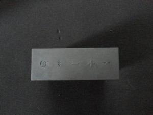

JBL Go Bluetooth Speakers
TL;DR: Tiny, loud and totally worth it.
TL;DR: Tiny, loud and totally worth it.
This summer I realised I needed a bluetooth speaker for both my laptop and my iPod Touch.
Immediately I scanned the e-commerce sites (flipkart, amazon and the likes) for bluetooth speakers within an affordable range (pocket money is scarce, people!) and of (atleast) a decent sound quality.
I found two that suited my needs:
The dilemma was that JBL would cut a 2,000 INR (Market price was mentioned as 3,000 INR, I guess) deep hole into my allowance, while Logitech would get the job done in around 1,600 INR.
I read some reviews, watched some unboxing videos, and came to a decision. I went with JBL, and I’m glad I did. These speakers are AMAZING.
The JBL Go Bluetooth speakers (“speakers”) are encased in a nice sturdy body covered on 5 sides with rubber and one side with a metal-mesh.
The rubber casing is a great help in gripping the speakers and it just feels good. The speakers feel strong in the hands and you won’t have to worry about having to handle them like they were made of feathers, unicorns and everything delicate in the world. If you drop things a lot, these are still okay for you. They won’t break… easily.
On the top of the speaker unit JBL provides 5 buttons that look like symbols until you press them upon which they depress slightly into the body. Don’t worry though, the response is good and you won’t be left wondering whether you pressed the button at all. They make a very distinct “click” against your finger.
Starting from the left, there are 5 buttons:
You can obviously guess what the power button is for, and if you can’t, well, read the manual, noob.
The bluetooth pairing button is required when you need to pair the speaker with a device (laptop, phone, iPod…anything that supports bluetooth audio profiles). While the device is on, but unpaired and not visible, there is a slow blinking light, blue in colour. Once you press the bluetooth pairing button, however, the light blinks faster until you pair it with some device upon which it becomes a steady blue light.
Volume up and down buttons are also self-explanatory.
The call answering button. This looks like a handset and rightly so, as pressing it allows you to answer an incoming call (provided the device you connected the speaker to is a phone capable on accepting calls.)
However, if you press the button when there are no incoming calls (or if the speaker is connected to a laptop or an iPod), the button works as a play/pause button, too, which is very handy. This only works with the default music app on your device, apparently, because if I press this button while watching a video on VLC, it simply launches iTunes. So, yeah.
On the right side of the speaker there are three ports. Well two ports and one mic, but you get the point.
There is an AUX in, a micro-usb port (for your charging needs) and a mic, so that you can talk to people if you use the speaker to answer calls.
JBL Go speaker comes with a rechargeable battery. JBL claims a 5hr playback time, however, the speakers usually run for more than 5hours, which is good, considering how fast they recharge.
While charging, the speaker lights up an orange LED that turns off once it has completed charging.
The same orange LED comes up when the charge on the speaker starts getting low.
Arguably the most important part of a speaker. The JBL Go does not disappoint with the sound quality and volume that it delivers. It’s packed with power and I did not expect the kind of quality, and volume that it delivered when I first used it. It’s great.
I’m not an audiophile, by the way, so I might have missed some finer details, but for everyone else, this speaker is fantastic.
It has a good bass output. In fact, if you hold it in your hand you can feel the speaker thumping with every beat.
The JBL Go speaker is, in my opinion, the best speaker you can buy in this range. Sound quality is great, build quality is amazing and the size is just perfect. It can easily fit into a trouser or a jeans pocket for carrying around. Although you might want to show it off, anyway.